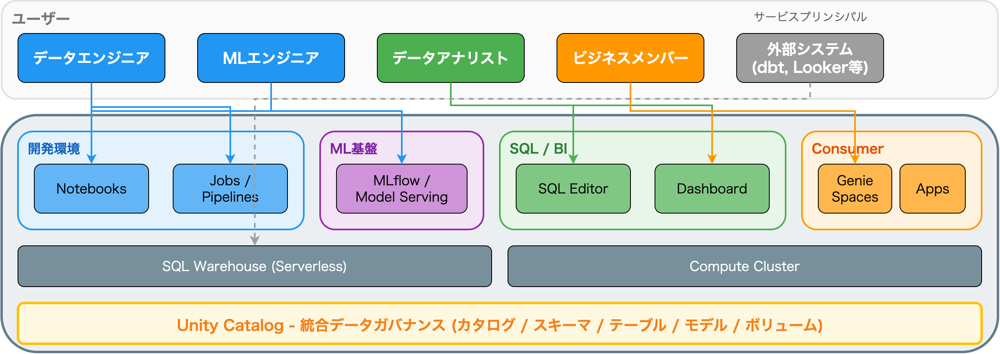
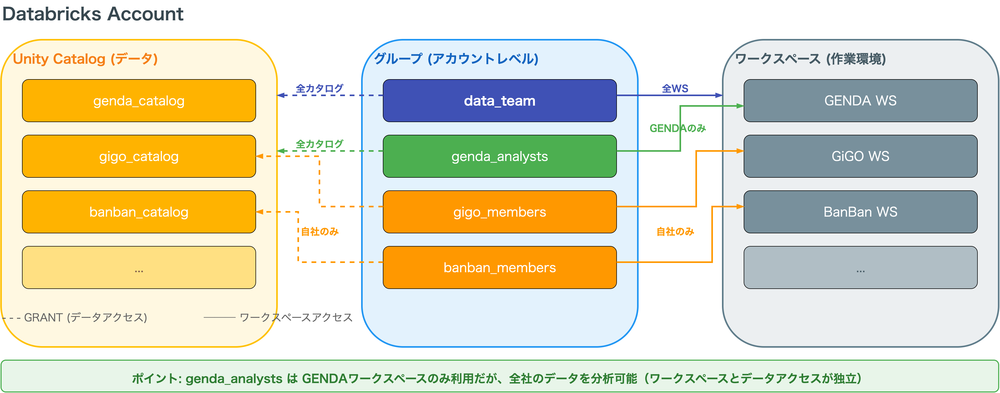
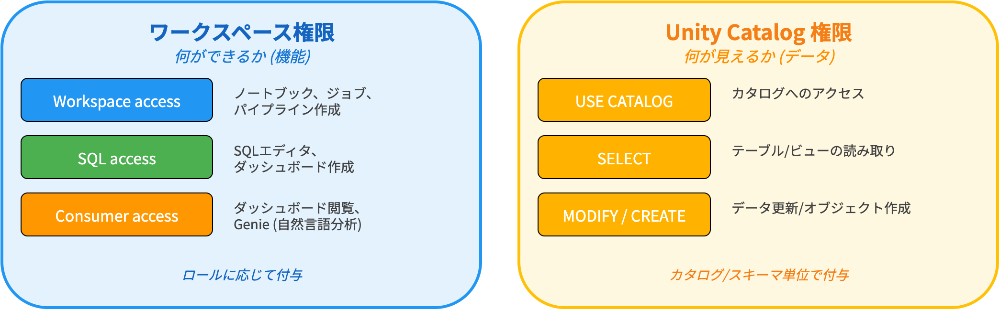
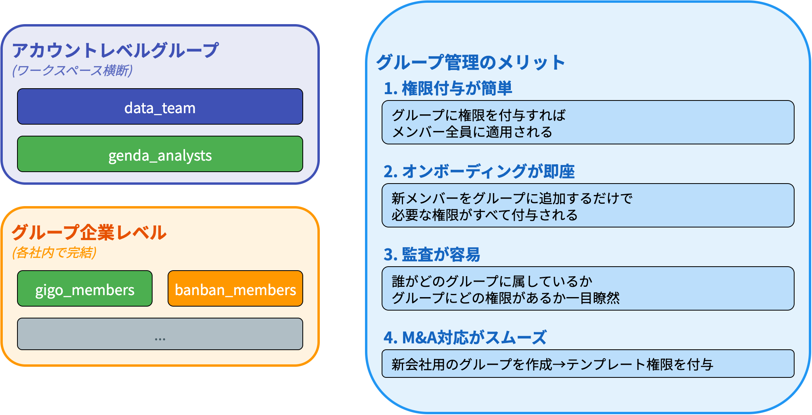
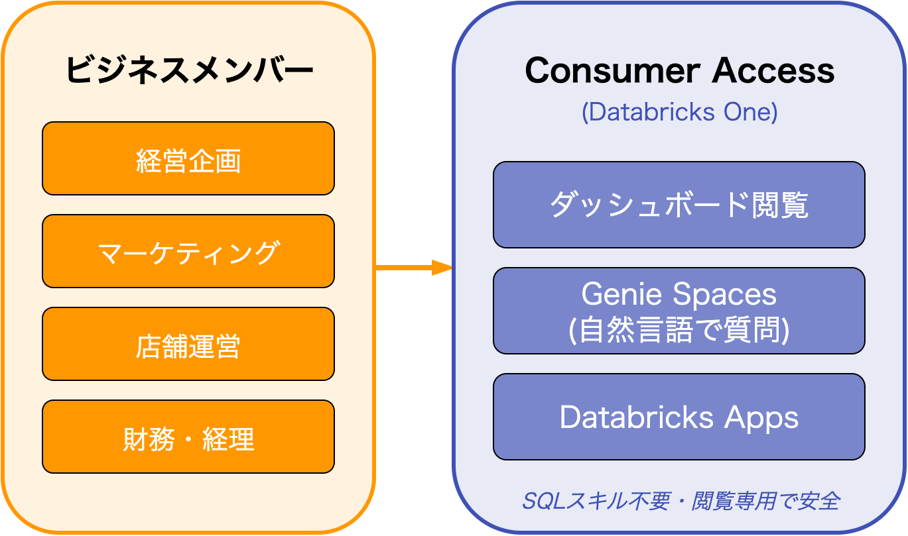
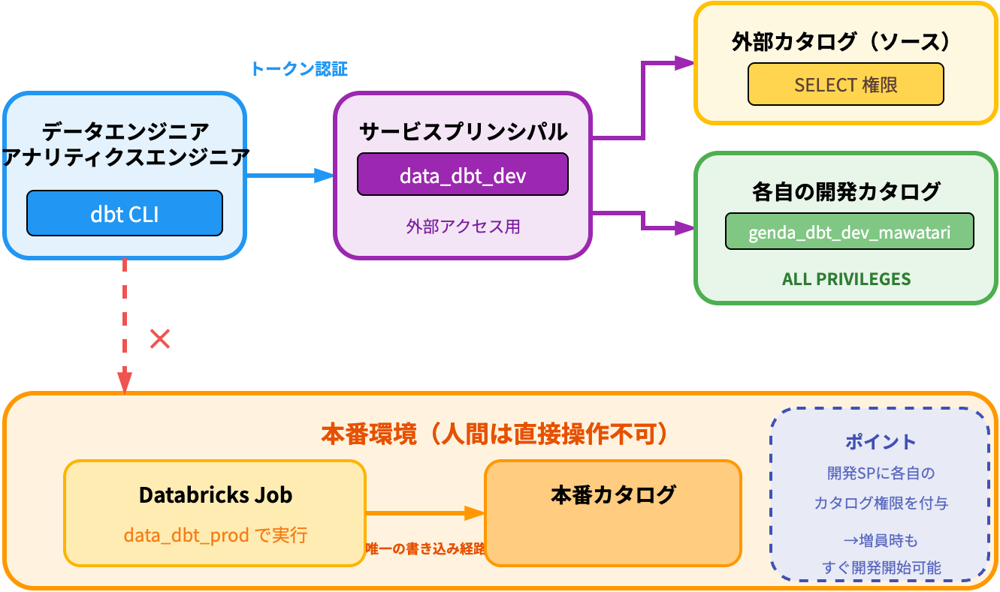
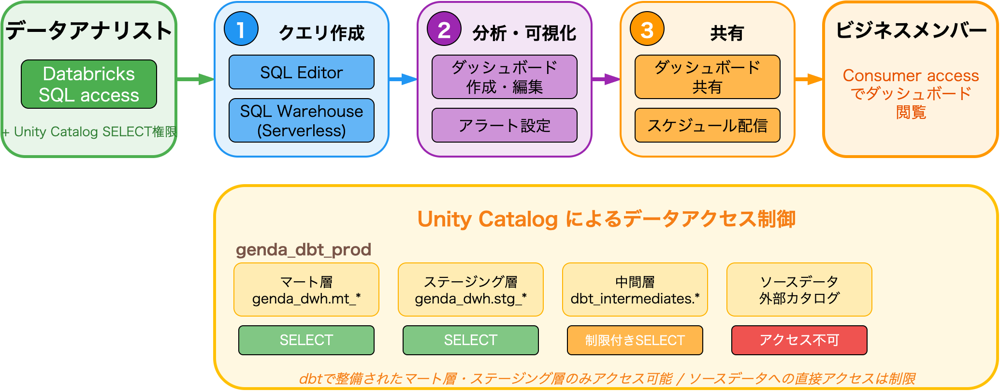

2025-12-22
Mawatari Daiki / uma-chan
株式会社GENDA IT戦略部 データチーム
データエンジニア / MLOpsエンジニア
M&Aで拡大するGENDAで、多様なユーザーが使いやすいDatabricks権限管理をどう実現しているか

| Snowflake | Unity Catalog |
|---|---|
| DATABASE.SCHEMA.TABLE | CATALOG.SCHEMA.TABLE |
| ROLE へ GRANT | GROUP へ GRANT |
| Stage (ファイル) | Volume (ファイル) |

| ロール | ニーズ |
|---|---|
| データエンジニア | パイプライン構築、ジョブ管理 |
| MLエンジニア | モデル開発、実験管理 |
| データアナリスト | SQL分析、ダッシュボード作成 |
| ビジネスメンバー | ダッシュボード閲覧、レポート確認 |




